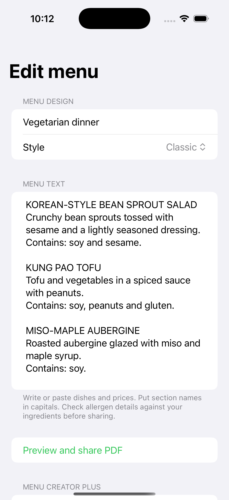
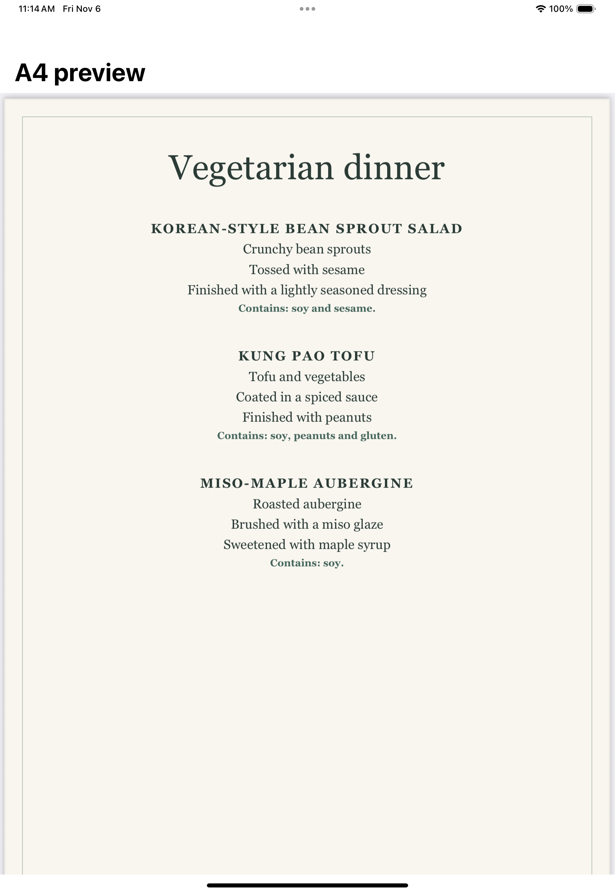
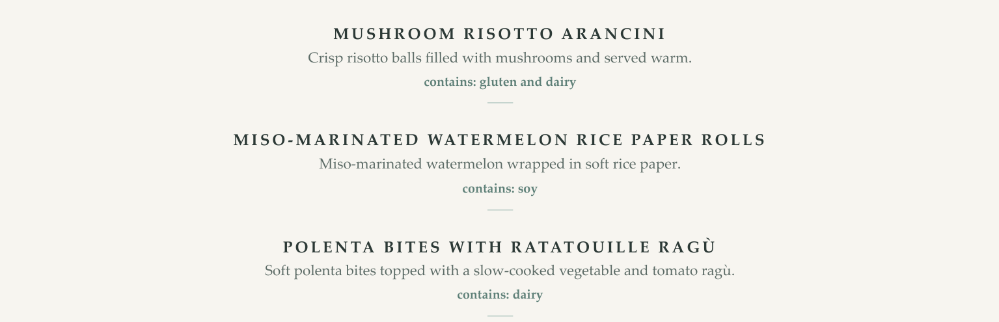
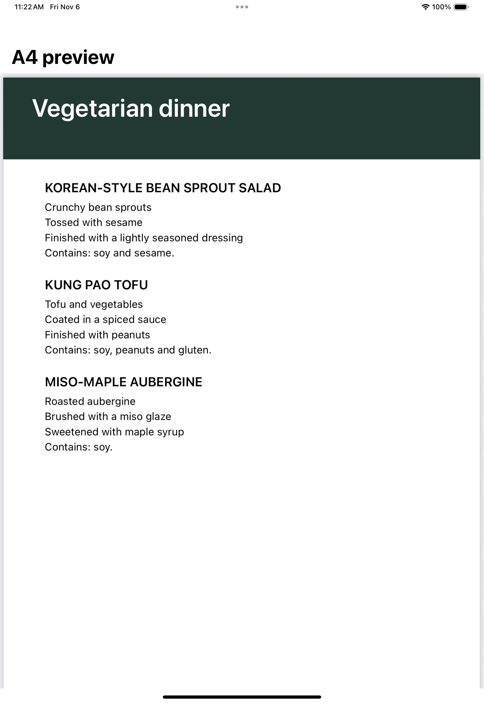
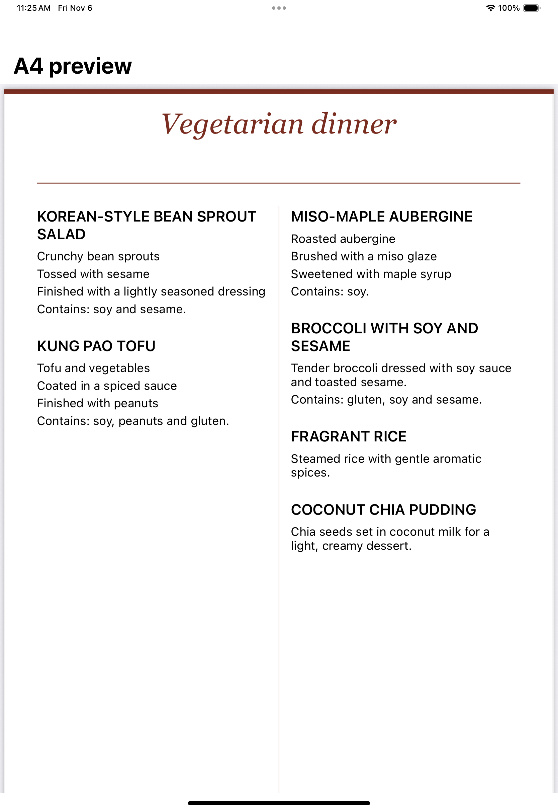
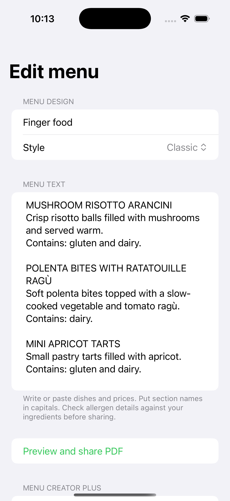
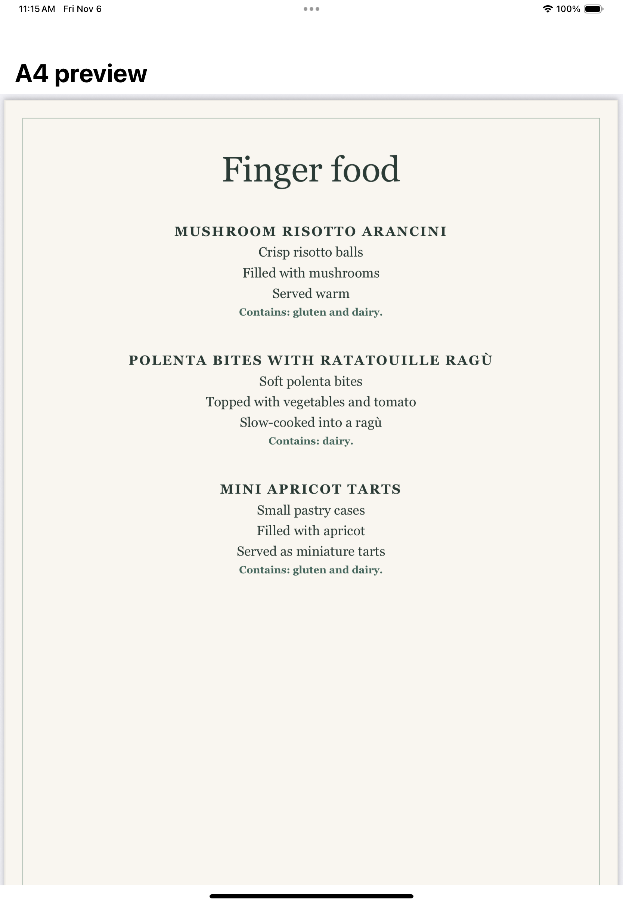

Vegetarian dinner
Bean sprout salad, kung pao tofu and miso-maple aubergine.




Crisp mushroom arancini, soft rice-paper rolls and polenta with slow-cooked ragù. See the dishes and allergen notes as they appear on the original printed menu.

Choose a style in the editor before exporting. Compare Classic, Modern and Garden below, then open the full-page Café Board and Bistro Columns previews.


These screenshots show the current Classic layout in the app with excerpts from both menus. Enter your own dishes and choose the look that suits your service. Select a screenshot to see the editor or A4 preview at full size.
Bean sprout salad, kung pao tofu and miso-maple aubergine.


Mushroom risotto arancini, polenta bites and mini apricot tarts.


Open a sample to see the full A4 layout or print a copy.

Give the menu a title, then write or paste dishes and prices. Put section names in capitals to turn them into headings.
Use the Style picker to choose Classic, Modern, Garden, Café Board or Bistro Columns.
Tap this button to check the A4 layout, then use Share to send the PDF to your printer or team.
In development for iPhone and iPad. The planned free version includes ads. Menu Creator Plus is a one-time purchase to remove them.
For support, complaints, privacy requests or business enquiries, email hello@parslia.app and include Menu Creator Studio in the subject.